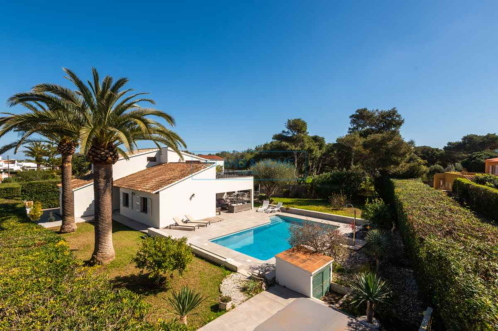

€1.125.000
Noria Riera (Sa Sínia d'en Riera), Es Castell, Menorca
Open the listingDesign-forward renovation with character touches: exposed porch beams, mature olive, palm garden and a built private pool on a generous private plot between Mahón and the south-coast beaches — finished living rather than thin new-build.
Opened 9 Sep 2026. Asking 1.125.000 €. IH card: 4 bed / 3 bath / 175 m² / 1,197 m² + private pool. Copy: beautifully renovated; living to terrace; island kitchen; master with pool-view terrace; covered terrace, pool and Jacuzzi. Hero shows beamed porch, olive/palm garden and built pool — finished design-forward with character touches. Not a fixer.